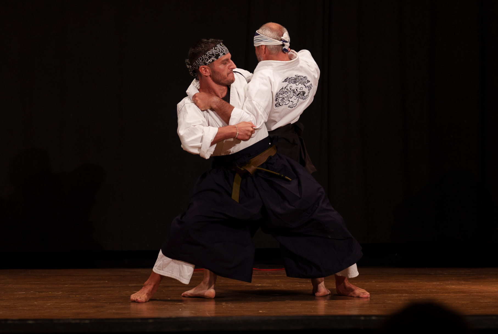

Open day di arti marziali tradizionali giapponesi

Domenica 11 ottobre 2026, dalle 9:00 alle 13:00
Sailing Gym, Viale Elmas 59, Cagliari
Una mattinata per conoscere e provare tre arti marziali tradizionali giapponesi, guidati dai loro insegnanti.
Per una mattina tre scuole aprono le porte alla Sailing Gym: tradizioni con storie e metodi diversi, che condividono lo stesso spirito di studio e di rispetto. Ogni scuola terrà una lezione introduttiva, per far conoscere il proprio modo di allenarsi e qualcosa della propria tradizione. La mattinata si chiuderà con una breve dimostrazione di Nio Shin Ryu Kempo, Karate Kyokushinkai e spada giapponese.
Non serve esperienza né preparazione specifica: basta la curiosità di mettersi in gioco. È anche un'occasione per scoprire approcci e metodi di allenamento diversi, e differenti modi di intendere la tradizione.
Il Sakushinkan è la scuola marziale del Tempio Tenryuzanji, fondata dal Venerabile Seiun, monaco e maestro di arti marziali tradizionali giapponesi. Il Sakushinkan è un sogo bujutsu, cioè un sistema marziale completo che riunisce più discipline tradizionali: Jujutsu, Kempo e Taijutsu per il combattimento a mani nude (colpi, prese, leve) e lo studio delle armi antiche, come bastone, spada, catena e altro.
L'addestramento, lontano dalla pratica sportiva, lavora insieme sul piano marziale, spirituale e di riequilibrio della persona, con l'obiettivo di formare l'individuo nella sua interezza e crescere buoni praticanti e futuri maestri.
Kyokushinkai Sardegna proporrà un'introduzione a questo stile di karate giapponese, noto per l'allenamento intenso, il condizionamento fisico e il combattimento a contatto pieno.
La Scuola di spada giapponese di Cagliari presenterà la Katori Shinto Ryu e lo Iaido Hoki Ryu, due scuole tradizionali di spada tramandate da secoli.
Tre lezioni introduttive guidate dagli insegnanti, seguite da una breve dimostrazione delle tre discipline.
Domenica 11 ottobre 2026
9:00–13:00
Aperto a tutti, anche a chi non ha mai praticato. Non serve esperienza né preparazione specifica.
Sailing Gym
Viale Elmas 59, Cagliari
Giornata del Budo
Domenica 11 ottobre 2026Sailing Gym
Viale Elmas 59, Cagliari